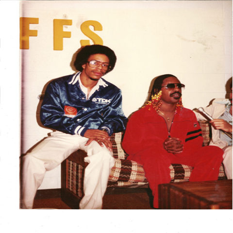

Bass6 Productions
Continuous Groove

I have been playing into music playing bass since I was in elementary school. I started on trumpet but while playing James Brown, Sly Stone, The Jackson 5 and Charles Wright & The Watts 103rd Street Rhythm Band, my attention turned to the bass guitar. In the 70’s I was the technical engineer for KGNU Boulder while I was studying at CU. It was difficult to get students/on air talent to show up for their shows and since I was already there, they gave me a slot. My show was called ‘Eclipse – The Shedding of a Blacker Light’. I played jazz, pop r and b, but mostly funk. Cameo, Brothers Johnson, Larry Graham, Lakeside, ConFunkShun, Marcus Miller etc. Eclipse became the first on-air presence for many of these performers. One night Warner Brothers sends me the album “For You”. The record company always suggested which song to play, but I chose “Soft & Wet”. In 1978 the song was considered too racy for on air play and the FCC ordered Prince and I to defend the song in a hearing. We success fully justified it as ‘innuendo’.
In 1980, Stevie Wonder comes to Boulder for the “Hotter Than July” tour. While warming up in the Gren Room, we are jamming on “All I Do“ (and Master Blaster of course). Stevie says “Hey why don’t you come and tour with us, Nathan Watts is gonna take over a project called WonderLove. I hemmed and hawed and said no because I didn’t think I was ‘good enough’. I was 19 years old. Good thing I didn’t cuz WonderLove did not fully materialize and of course, Nate came back. Twenty years later while working on test algorithms for FPGA microchips, (in my day job, I designed and built power systems for the Space Shuttle and nuclear submarines (and black ops helicopters, but I can’t say that))… it occurred to me that if Stevie Wonder asks you to play…You’re good enough.
I’m five years old, living on an army base in Ft. Huachuca Arizona. Next door is this kid who’s always in the backyard playing the saxophone. I grab the Quaker Oats oatmeal box and spoons and accompany him on drums. The neighbors ‘tolerate’ us. Fast forward a few years and I’ve torn my father’s hand built stereo apart and connected my $50 bass to it. As my father prepares to give me “what for”.. he sees the “Album Open Our Eyes” leaned against the speaker and he says, “That’s that boy”. I say what boy?, he says “Andrew Woolfolk” (Of EWF) the neighbor you used to jam with. We drive to his house in Denver and just ‘hang out’.